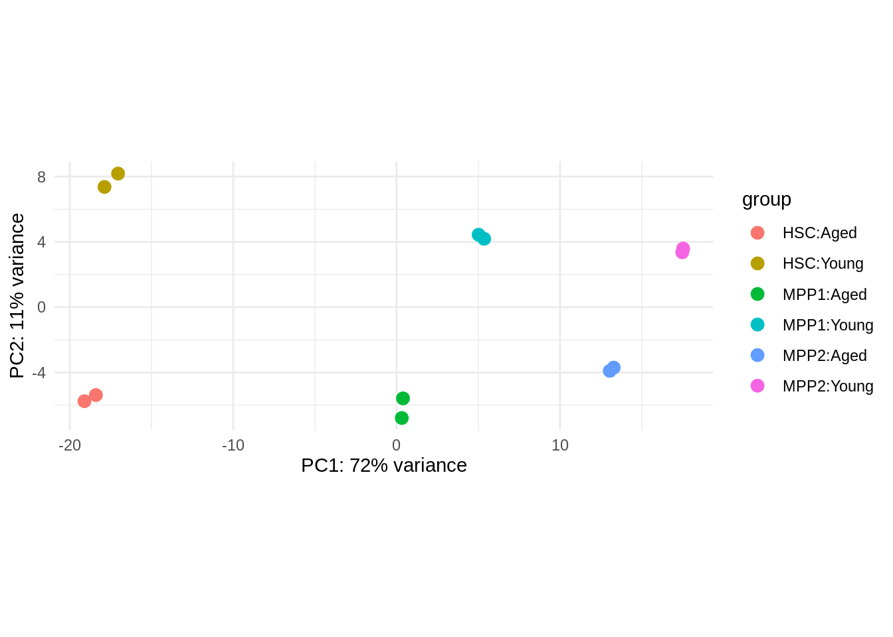
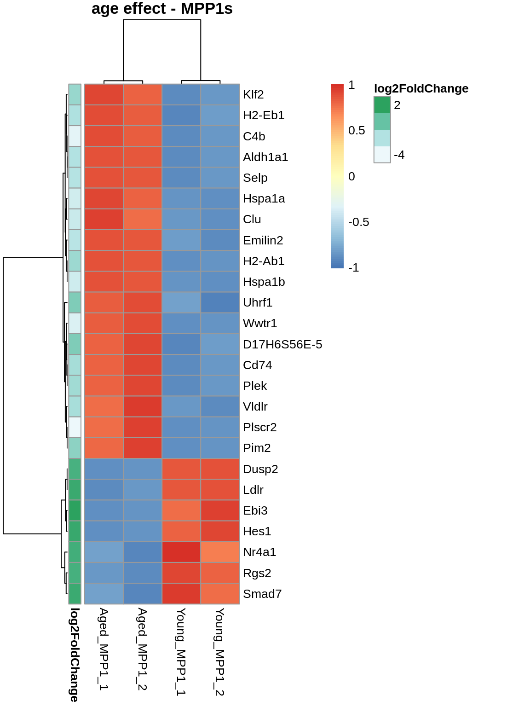
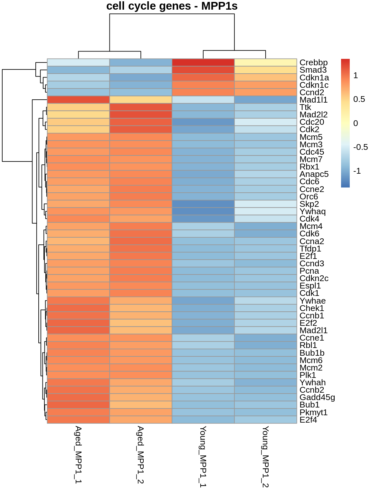
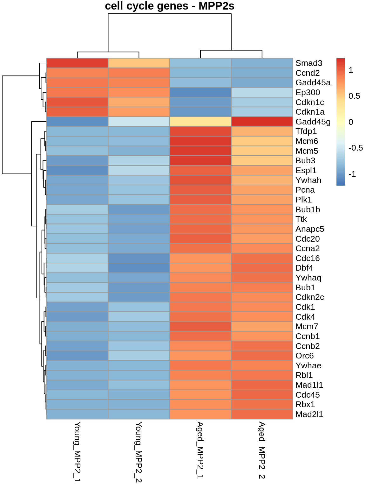

deseq2 - applied
Bioinfo-Core @ MPI-IE
Mon Jun 5 13:35:34 2023
Goals: Apply what was learned through the course.
- repeat: generating DESeq-object (data, metadata, design)
- Initial QC and visualisation.
- Run the DESeq workflow
- Interpret some of the results
1. Introduction
Background:
We are looking in murine bone marrow cells. More specifically, the stem- and multipotent progenitor cells. A (very expensive) experiment was set up, and there is RNA-seq data available three cellTypes:
- HSCs
- MPP1
- MPP2
collected from both young and aged mice. You and your lab are eager to see:
- Did the experiment work ?
- What are the effects of aging on the different cell populations ?
Hint: a list of cell-cycle genes (KEGG) are available under:
data/genesets/KEGG_cellcycle.txt
Dataset: MPP Note that this is publically available data under GEO accession ID GSE162607 with DOI: 10.1038/s41467-022-30440-2.
with count matrix and meta data:
data/mpp/mpp_counts.tsv
data/mpp/mpp_meta.tsv
Note: rownames in the count object are lowercase-capitalized, the KEGG_cellcycle ones are fully capitalized).
Good luck and have fun!
2. Let’s go.
a. Libraries, data & factors
library("DESeq2")
library("ashr")
library("tidyverse")
library("pheatmap")
library("UpSetR")Read in the data.
dfile <- "data/mpp/mpp_counts.tsv"
data <- read_tsv(file=dfile)
data <- data %>% column_to_rownames("gene_id")
mfile <- "data/mpp/mpp_meta.tsv"
metadata <- read_tsv(file=mfile)
metadata <- metadata %>% column_to_rownames("sample")
metadata$condition <- as.factor(metadata$condition)
metadata$celltype <- as.factor(metadata$celltype)Check our factors !
print(metadata$celltype)## [1] HSC HSC MPP1 MPP1 MPP2 MPP2 HSC HSC MPP1 MPP1 MPP2 MPP2
## Levels: HSC MPP1 MPP2print(metadata$condition)## [1] Young Young Young Young Young Young Aged Aged Aged Aged Aged Aged
## Levels: Aged YoungRelevel factors !
levels(metadata$condition) <- c("Young","Aged")
print(metadata$condition)## [1] Aged Aged Aged Aged Aged Aged Young Young Young Young Young Young
## Levels: Young Agedb. Build DESeq object.
dds <- DESeqDataSetFromMatrix(countData=data,
colData=metadata,
design = ~celltype*condition
)c. plotPCA
#plotPCA(vst(dds, blind=TRUE))
plotPCA(rlog(dds, blind=TRUE),
intgroup=c("celltype", "condition")
) + theme_minimal()
d. run DESeq2
dds <- DESeq(dds)e. sizeFactors & dispersion
sizeFactors(dds)## Young_HSC_1 Young_HSC_2 Young_MPP1_1 Young_MPP1_2 Young_MPP2_1 Young_MPP2_2
## 0.8741664 1.0907894 1.0501099 1.0596767 0.9307710 0.9863305
## Aged_HSC_1 Aged_HSC_2 Aged_MPP1_1 Aged_MPP1_2 Aged_MPP2_1 Aged_MPP2_2
## 0.9004813 1.0741130 0.9827498 1.1019995 1.0009257 1.0478315plotDispEsts(dds)set.seed(42)
metadata_thrash <- metadata
metadata_thrash$celltype <- sample(metadata$celltype)
metadata_thrash$condition <- sample(metadata$condition)
MM=model.matrix(design(dds), metadata)
pheatmap(MM, cluster_cols = FALSE, cluster_rows=FALSE)MM_thrash=model.matrix(design(dds), metadata_thrash)
pheatmap(MM_thrash, cluster_cols = FALSE, cluster_rows=FALSE)dds_thrash <- DESeqDataSetFromMatrix(countData=data, colData=metadata_thrash, design=design(dds))## converting counts to integer modedds_thrash <- DESeq(dds_thrash)## estimating size factors## estimating dispersions## gene-wise dispersion estimates## mean-dispersion relationship## final dispersion estimates## fitting model and testingplotDispEsts(dds_thrash)
f. LRT for age.
# which model are we interested in as reduced?
dds_lrt <- DESeq(dds, test="LRT", reduced = ~celltype)
res_lrt <- results(dds_lrt)g. results.
cleanDF <- function(RESobj){
RESdf <- data.frame(RESobj) %>%
drop_na() %>%
arrange(padj)
return(RESdf)
}
res_lrt_clean <- cleanDF(res_lrt)
head(res_lrt_clean)h. Look at the LRT results
Top 25 for sanity check:
normcounts <- counts(dds, normalized=TRUE) %>% data.frame()
top_25_genes <- res_lrt_clean %>% arrange(padj) %>% head(25) %>% rownames()
pheatmap(
normcounts %>% subset(rownames(normcounts) %in% top_25_genes),
scale = 'row',
main='Age effect - LRT top 25'
)pheatmap(
normcounts %>% dplyr::filter(rownames(.) %in% top_25_genes),
scale = 'row',
main='b: Age effect - LRT top 25'
)All “signifcant”
normcounts %>%
subset(rownames(normcounts) %in% rownames(res_lrt_clean %>% subset(padj < 0.05))) %>%
pheatmap(
scale = 'row',
main='Age effect - LRT',
show_rownames = FALSE
)Make clusters
normcounts %>%
subset(rownames(normcounts) %in% rownames(res_lrt_clean %>% subset(padj < 0.05))) %>%
pheatmap(
scale = 'row',
kmeans_k = 4,
main='Age effect - LRT',
show_rownames = FALSE
)Overlap with pre-defined group:
# Get cell cycle genes.
ccf <- "data/genesets/KEGG_cellcycle.txt"
cellcycle <- read_tsv(file=ccf, col_names=FALSE)
# character vector of cellcycle genes with proper naming convention
cellcycle <- cellcycle$X1 %>% str_to_title()
res_lrt_clean_cycle <- res_lrt_clean %>%
dplyr::filter(rownames(res_lrt_clean) %in% cellcycle) %>%
dplyr::filter(padj < 0.05)
normcounts %>%
dplyr::filter(rownames(normcounts) %in% rownames(res_lrt_clean_cycle)) %>%
pheatmap(
scale = 'row',
main='cell cycle genes - LRT',
show_rownames = FALSE
)
i. Pairwise comparisons for age effect under different celltypes
# Remember our base levels and our coefficients.
print(resultsNames(dds))## [1] "Intercept" "celltype_MPP1_vs_HSC"
## [3] "celltype_MPP2_vs_HSC" "condition_Aged_vs_Young"
## [5] "celltypeMPP1.conditionAged" "celltypeMPP2.conditionAged"# Get our pair-wise comparisons. Note we immediately clean up our results.
# Remember our matrix Trick!
mod_mat <- model.matrix(design(dds), colData(dds))
HSC_young <- colMeans(mod_mat[dds$celltype == 'HSC' & dds$condition == "Young",])
HSC_old <- colMeans(mod_mat[dds$celltype == 'HSC' & dds$condition == "Aged",])
MPP1_young <- colMeans(mod_mat[dds$celltype == 'MPP1' & dds$condition == "Young",])
MPP1_old <- colMeans(mod_mat[dds$celltype == 'MPP1' & dds$condition == "Aged",])
MPP2_young <- colMeans(mod_mat[dds$celltype == 'MPP2' & dds$condition == "Young",])
MPP2_old <- colMeans(mod_mat[dds$celltype == 'MPP2' & dds$condition == "Aged",])
# The easiest to fetch is the age effect in HSC cells.
ageEffect_HSC <- cleanDF( lfcShrink(dds, contrast = HSC_old-HSC_young , type="ashr") )
# Now let's get the age effect in MPP1 cells. (Which is the condition effect + our interaction term).
ageEffect_MPP1 <- cleanDF( lfcShrink(dds, contrast = MPP1_old-MPP1_young, type='ashr') )
# Lastly, let's get the age effect in MPP1 cells.
ageEffect_MPP2 <- cleanDF( lfcShrink(dds, contrast = MPP2_old-MPP2_young, type='ashr') )normcounts %>%
subset(rownames(normcounts) %in% rownames(head(ageEffect_HSC, 25))) %>%
dplyr::select(1,2,7,8) %>%
pheatmap(
scale = 'row',
main='age effect - HSCs',
show_rownames = TRUE,
annotation_row = ageEffect_MPP1[c(1:25), c('log2FoldChange'), drop=FALSE]
)# cell cycle
ageEffect_HSC_cycle <- ageEffect_HSC %>%
subset(rownames(.) %in% cellcycle) %>%
subset(padj < 0.05)
normcounts %>%
subset(rownames(normcounts) %in% rownames(ageEffect_HSC_cycle)) %>%
dplyr::select(1,2,7,8) %>%
pheatmap(
scale = 'row',
main='cell cycle genes - HSC',
show_rownames = TRUE
)
pheatmap(
normcounts %>% subset(rownames(normcounts) %in% rownames(head(ageEffect_MPP1, 25))) %>% dplyr::select(3,4,9,10),
scale = 'row',
main='age effect - MPP1s',
show_rownames = TRUE,
annotation_row = ageEffect_MPP1[c(1:25), c('log2FoldChange'), drop=FALSE]
)
# cell cycle
# cell cycle
ageEffect_HSC_cycle <- ageEffect_HSC %>%
subset(rownames(.) %in% cellcycle) %>%
subset(padj < 0.05)
ageEffect_MPP1_cycle <- ageEffect_MPP1 %>%
subset(rownames(.) %in% cellcycle) %>%
subset(padj < 0.05)
pheatmap(
normcounts %>% subset(rownames(normcounts) %in% rownames(ageEffect_MPP1_cycle)) %>% dplyr::select(3,4,9,10),
scale = 'row',
main='cell cycle genes - MPP1s',
show_rownames = TRUE
)
pheatmap(
normcounts %>% subset(rownames(normcounts) %in% rownames(head(ageEffect_MPP2, 25))) %>% dplyr::select(5,6,11,12),
scale = 'row',
main='age effect - MPP2s',
show_rownames = TRUE,
annotation_row = ageEffect_MPP2[c(1:25), c('log2FoldChange'), drop=FALSE]
)# cell cycle
ageEffect_MPP2_cycle <- ageEffect_MPP2 %>%
subset(rownames(.) %in% cellcycle) %>%
subset(padj < 0.05)
pheatmap(
normcounts %>% subset(rownames(normcounts) %in% rownames(ageEffect_MPP2_cycle)) %>% dplyr::select(5,6,11,12),
scale = 'row',
main='cell cycle genes - MPP2s',
show_rownames = TRUE
)